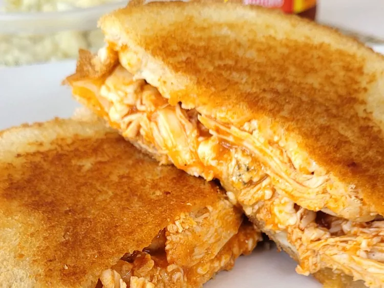

Home page
Buffalo chicken with blue cheese and pepper
jack meets grilled cheese! That spicy kick
from the buffalo sauce, melted cheese, and the buttery
crunchy bread makes for a filing sandwich.

- 1 ½ tablespoons Buffalo wing sauce
- ½ cup shredded cooked chicken
- 2 slices white bread
- 1 slice pepper Jack cheese
- 3 tablespoons crumbled blue cheese
- 1 tablespoon butter, softened
- Combine shredded chicken, buffalo wing sauce, and blue cheese in a small bowl.
- Preheat a small skillet over medium heat.
-
Spread 1/2 tablespoon butter on one side of a slice of bread. Place bread butter-side-down
onto the skillet bottom and place pepper Jack cheese on top. Top with chicken mixture. Butter a second
slice of bread with remaining butter on one side and place on top of sandwich, butter-side-up.
- Cook sandwich in skillet until lightly browned bread and flip over; about 2 1/2 minutes per side.